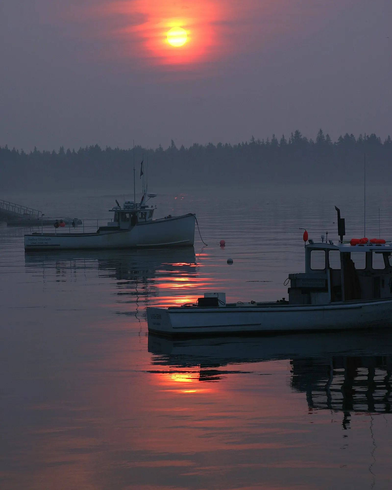
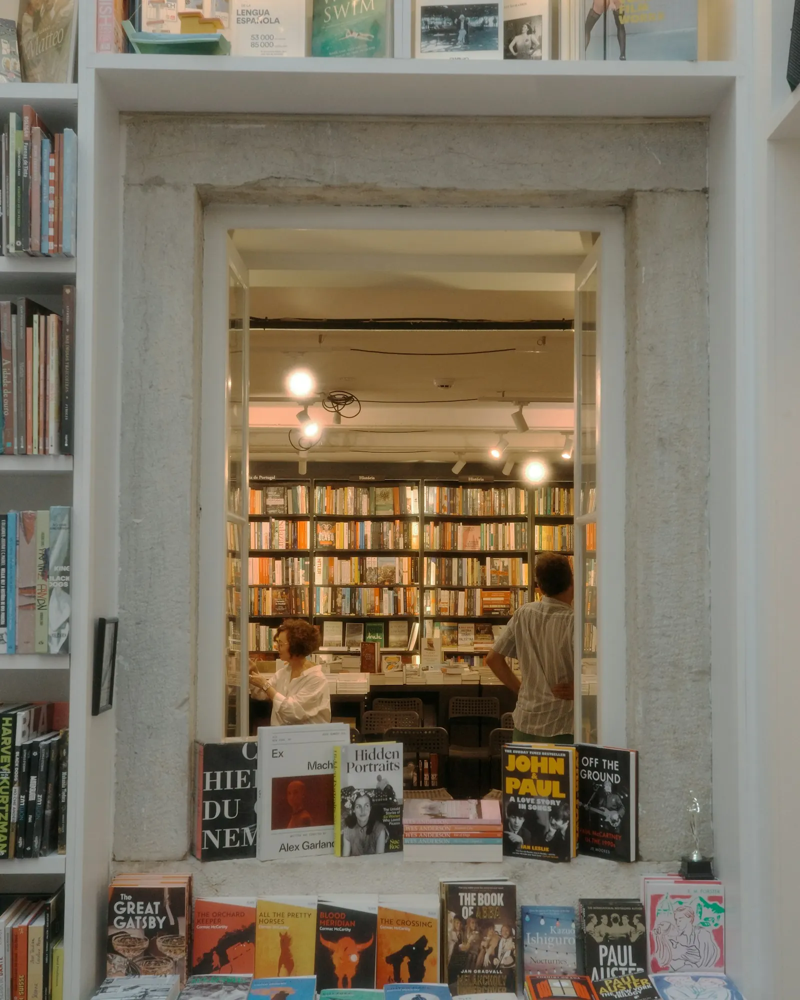
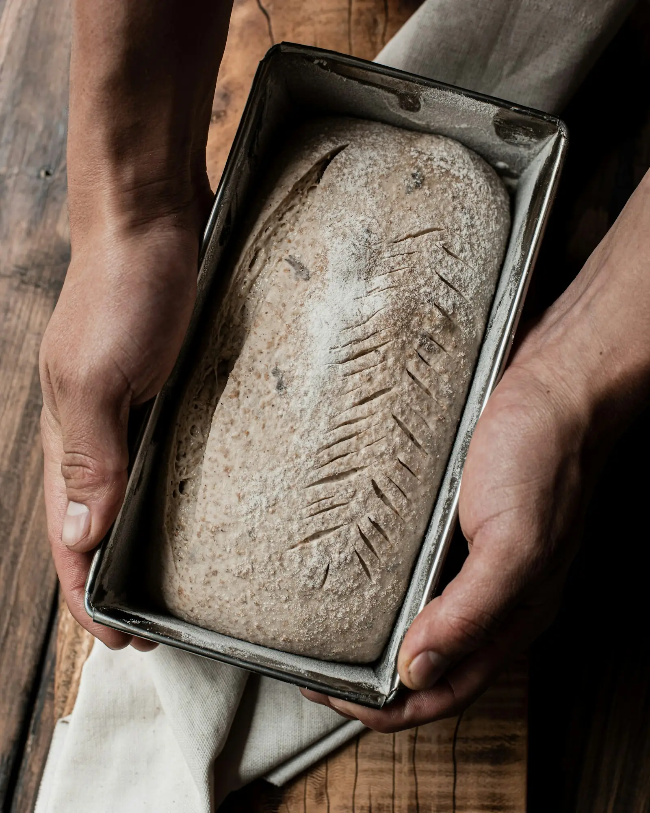
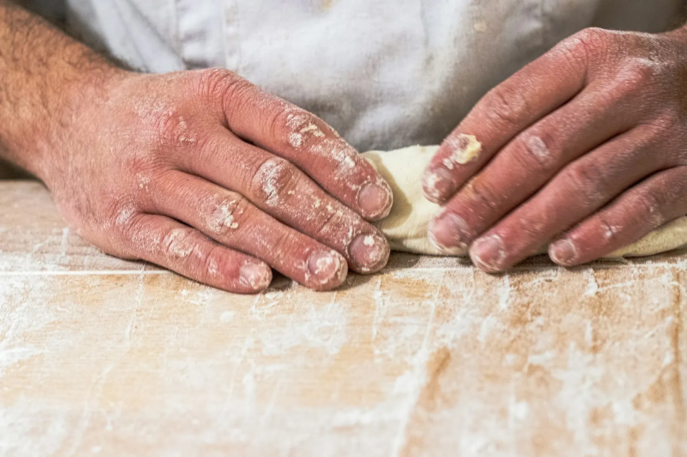

Places
The Bookshop That Opens With the Boats
In a harbor town that sends its boats out at five, the only shop with a light on sells poetry, tide tables and a loaf that takes two days to make.
The light in the window of Teale and Daughter comes on at twenty past five, which is roughly ten minutes before the first diesel engine turns over in the harbor below it. Nobody planned this. Margo Teale, who has owned the shop since 1998 and baked in the back of it since 2009, says she simply noticed one winter that the men walking down to the boats looked at her window the way you look at a lit kitchen from a cold street. So she started unlocking the door.
Port Ellery is not a pretty town in the way the brochures mean it. The seafront is a working one, with a fish market that hoses itself down at noon and a lot where the ice trucks back in. The bookshop sits one street back, in a building that was a chandlery until the seventies and still has the iron hooks in the ceiling beams where coils of rope once hung. Margo uses them for drying herbs and, in December, for the paper stars her granddaughter makes.

The shop is two rooms. The front room is books: new fiction on the table by the door, poetry on the shelf that catches the morning, a wall of secondhand paperbacks sold at whatever Margo thinks they are worth that day. The back room is the bakery, and the back room is why the fishermen come in.
She makes one kind of bread. It is a dense, dark loaf, mostly rye, with a crust that cracks along a single slash she cuts with a bread knife older than the shop. The dough takes two days: a starter fed the night before, a long cold rest in the walk-in that used to hold the chandlery's paint, then a bake at a quarter to five in an oven that was delivered by boat because the van could not get down the lane. She sells it in halves, wrapped in yesterday's newspaper, for four dollars.
The tide tables are her other stock in trade, and they are free. She prints them herself on the backs of last season's unsold flyers, a month at a time, and leaves the stack by the register under a flat grey stone from the beach. The fishermen do not need them; they know the water the way you know your own stairs in the dark. The tables are for the rest of us, she says, the visitors and the retired and the people off the first train, who arrive in Port Ellery wanting to understand the place and can at least begin by knowing when it will be wet.
"I am not a baker. I am a bookseller who got tired of watching people walk past hungry."
Margo Teale
By half past five there are usually four or five of them in the front room, standing, because the only chair is Margo's. They do not browse, exactly. They pick up whatever is on the table and read the first page while they wait for the loaves to come out, and sometimes they buy it. Dan Kerrigan, who has fished out of Port Ellery for thirty-one years, told me he had read more since the shop started opening early than in the rest of his life put together.
"It's the standing up," he said. "You read different standing up. You don't settle in. You just find out whether you want it."
A box of her father's things
Margo's father ran the bakery on the quay until it closed in 1986, outbid for its lease by a company that wanted the frontage for a fried-clam stand. She was twenty-one and had no interest in bread. She went to the city, worked in a university library for a decade, came back when her mother got ill, and never quite left. The bookshop was meant to be a two-year thing.
The bread came later, and by her own account by accident. A regular customer, a retired teacher named Hal Brisco, turned up one afternoon with a box of her father's things he had been keeping: a recipe card, a cane proofing basket, the knife. She tried the recipe once for the shop's tenth birthday. Then she tried it again because people asked. Then she bought the oven.


It would be easy to make this sound quainter than it is. The shop is not warm in January. The oven keeps the back room bearable and the front room gets whatever leaks through the doorway. Margo wears fingerless gloves to work the register. The floor is uneven enough that the poetry shelf has a folded coaster under one foot, and has had since at least 2004, which was the year the roof was redone and the year she stopped noticing it.
"You read different standing up. You don't settle in. You just find out whether you want it."
Dan Kerrigan, skipper
What it is, instead, is a shop with a theory about mornings. The theory is that the first hour of a working day is the only hour that belongs entirely to the person living it, and that a town which gives its people somewhere to spend that hour, with a light on and something worth reading and bread they can smell before they see it, has decided something about itself.
Margo does not put it that way. When I asked her what the shop was for, she said, "It's for the boats," and went to check the oven.

I left at seven with half a loaf under my arm and a secondhand poetry collection I had not meant to buy. On the quay the boats were already small. The newspaper wrapping was the previous Thursday's, and on the inside, where the bread had pressed against it, there was a story about the harbor dredging. It had gone slightly translucent with butter. I read it on the train, standing up.
One story like this, every Thursday.
The week's feature, two shorter pieces and a line from the editor. No lists of ten things. Unsubscribe any time.
Sample form. Nothing is sent or stored; on the live site this posts to Mailchimp's embedded form endpoint.